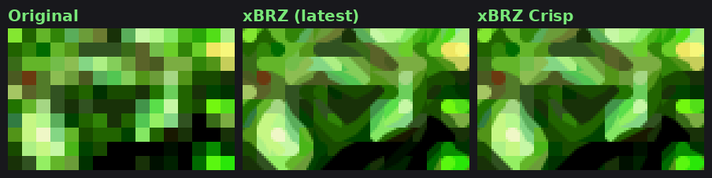
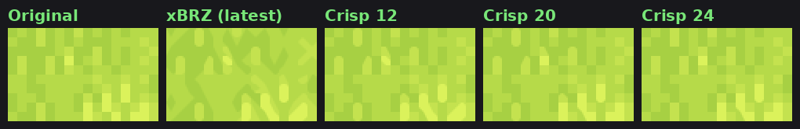
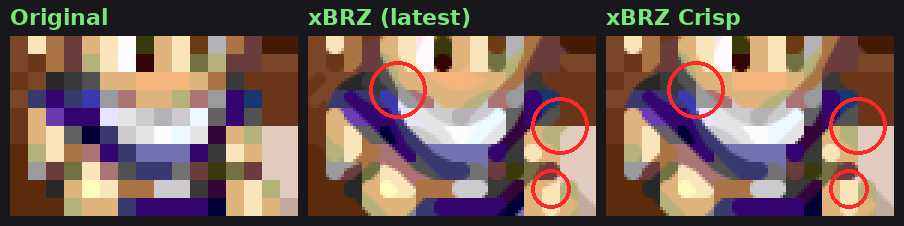
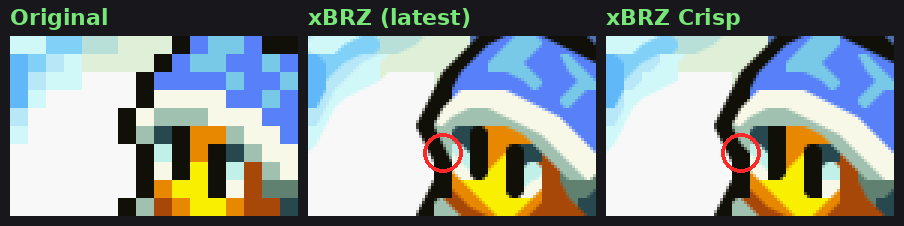
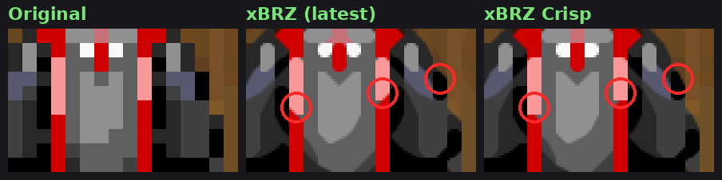
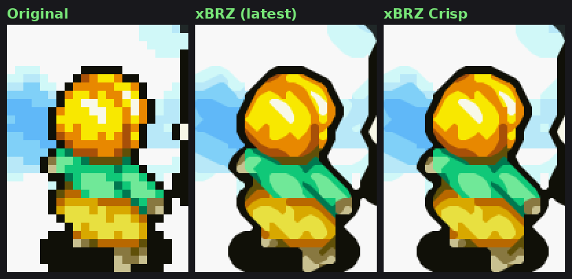
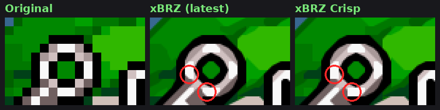
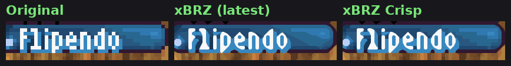

xBRZ Crisp
xBRZ smooths every corner it finds, so soft shading and textures melt into blobs. xBRZ Crisp only rounds a corner when its two colors are clearly different. Outlines, text and sprites are smoothed as in xBRZ, and grass, foliage and stone keep the pixels the artists drew.
See what Crisp adds on top of xBRZ
Drag the line to compare. All frames are Game Boy Advance screens at 6x, rendered with the RetroArch shader code. Integer (integer scaling) shows the original pixels. MMPX Adv (MMPX Advanced) is the libretro scalenx shader at 2x, enlarged 3x, and ScaleFX is the libretro scalefx-9x preset at 9x, scaled down to 6x by area averaging. xBRZ (latest) is the current libretro xbrz-freescale-multipass, which already includes improvements that came from xBRZ Crisp.
Left
Right
Tip: from 2× to 4× the view scrolls; the line stays where you put it. Arrow keys move the line when it has focus. "Mark differences" outlines in red every spot where the two sides differ. Hold the button under the picture (or the O key) to see the original pixels. xBRZ (latest) is the current libretro xbrz-freescale-multipass, which includes the port fixes and thresholds contributed by xBRZ Crisp since October 20, 2026 (tolerance 15, steep 3.2, dominant 3.8).
Presets
There are three presets, from smoothest to closest to the original art. Load one, or set XBRZ_MINC in Quick Menu › Shaders › Shader Parameters and save the preset. The cost does not change with the value.
| Preset | XBRZ_MINC | Look |
|---|---|---|
| xbrz-crisp-12 | 12 | The closest to xBRZ. Only the softest shading and dithering keep their pixels, and everything else is smoothed as in xBRZ, still visibly sharper. |
| xbrz-crisp (default) | 20 | The balance. Grass, foliage and stone keep most of their detail, while outlines, faces, text and most soft diagonals stay smooth. |
| xbrz-crisp-24 | 24 | The closest to the original art. Textures keep nearly all their pixels, and some soft diagonals turn into steps. |
Parameters
Every value can be changed live in Quick Menu › Shaders › Shader Parameters.
| Parameter | Default | What it does |
|---|---|---|
| XBRZ_MINC | 20 | Minimum color contrast (x/255) for a corner to be rounded. 0 turns it off (the tolerance and steep thresholds below still apply). |
| XBRZ_DIAG | 100 | Maximum color distance (x/255) between the two colors a cut would join. Above it, the corner stays square. 0 turns it off. |
| XBRZ_TOL | 15 | Equal color tolerance. The reference C++ xBRZ uses 30. |
| XBRZ_STEEP | 3.2 | Steep and shallow line threshold. The reference C++ xBRZ uses 2.2, which turns 1-pixel steps into slopes; 3.2 keeps letters and 1-pixel details closer to the original. |
| XBRZ_DOM | 3.8 | Dominant direction threshold. The reference C++ xBRZ uses 3.6; 3.8 keeps small corners close to square instead of cutting them into long tips. |
What Crisp adds on top of xBRZ
xBRZ scales pixel art by asking one question at every corner of every pixel: is this the corner of a shape? If the answer is yes, it cuts the corner with a neighbor's color, and a staircase of pixels becomes a smooth line. That works beautifully on outlines and text. Its weakness is that it says yes too often, so shading, textures and faces get shapes the artist never drew.
xBRZ Crisp keeps every answer xBRZ gives and adds a few vetoes. A vetoed corner simply stays square, the way the artist drew it. Nothing is blurred and no new colors are made.
1. Soft shading is not a shape

In grass, leaves and stone, neighboring pixels differ by only a few shades. xBRZ reads each of those small steps as an edge and rounds it, so the texture melts into wavy blobs. Crisp measures how different the two colors of each corner are (a YCbCr distance out of 255) and leaves the corner square below XBRZ_MINC. Real edges, like outlines, are far above the limit and stay smooth. A corner just below the limit is still rounded when the corners on both sides of it along the same diagonal are, so a diagonal edge has no tooth where its contrast dips for a pixel. Where a line crosses an antialiasing pixel on a strong edge, like the edge of a roof in Golden Sun, both halves of the pixel are cut as in xBRZ, so the pixel becomes part of the diagonal instead of a notch in it.

This limit is the one dial that sets the look: 12 stays closest to xBRZ, 24 keeps the most texture, and 20, the default, sits in between. Up to 20, each step keeps more of the original pixels for little loss of smoothness. Past it, smooth antialiased shapes start to lose more.
2. Different colors are not joined

Cutting a corner joins its two diagonal neighbors into one line. That is right when they share a color, as along a sloped outline. When they are very different, like a purple scarf next to skin, the corner is a meeting point of three colors, not a line, and xBRZ pulls one color into the other: the scarf runs into the face and the hair into the scarf. Crisp only joins diagonal neighbors whose colors are within XBRZ_DIAG (100) of each other.
3. Dark pixels keep their shape

Eyes, pupils and outlines are often a single dark pixel wide, and that pixel is what we read as the shape. Where a sloped line would shave a dark pixel with a lighter color, at a meeting of different colors, Crisp keeps the dark pixel whole. The eyes stay the straight strokes the artist drew instead of being rounded into drops.
4. Lines end the way they were drawn

Robes, health bars, frames and windows are built from straight 1-pixel lines. xBRZ rounds their ends and bends them where they meet another line. Crisp keeps a corner square when its blend color runs straight on, and stacked stripes that end together all end square, so the trim stays straight and the collar keeps its shape. A short stripe whose end meets a line running on, like a dark blue line in Minish Cap, lets that line close as in xBRZ.

The vetoes never cut a line short. A blocked corner is still cut when the next corner along the same diagonal is cut, so diagonal lines are drawn to their end, and between two close inner tones the cut runs on up to the dark outline, which stays whole. Where the artist drew a 45-degree diagonal of one color up to a straight line, like a lock of hair or the corner of a fence post, the corner is rounded as in xBRZ, unless that would bend a straight line or stretch a lone dot such as an eye. A thin light stroke that runs on along the diagonal, like the white strokes of letters or a ring with gray antialiasing, is rounded as in xBRZ too, so letters have no square joints.
5. The artist's antialiasing stays

Many sprites already have hand-placed in-between pixels that soften a corner, like the dark orange pixels between this black outline and the yellow hair. When one of a corner's colors sits between the other two, Crisp treats it as the artist's antialiasing and uses a stricter limit (92), so xBRZ does not round the same corner a second time. When that in-between pixel is a single step on a diagonal edge, with the far color wrapping around it and the pixel's own color running on along the cut, the corner is rounded as in xBRZ, so shaded edges like Soma's cape in Castlevania run on to their end. A diagonal that ends on a straight edge, like the tip of a lock of Link's hair, is also closed as in xBRZ.
What does not change

Edges are found exactly as xBRZ finds them, so letters, outlines and large shapes come out as smooth as in xBRZ. The result reads like xBRZ from a distance, with clean round shapes. Up close, textures, faces and interface details look like the original art instead of being repainted.
The idea of only joining colors that match along the diagonal comes from cleanEdge by torcado. No cleanEdge code is included.
Port details: the shader is based on the libretro xbrz-freescale-multipass port. Blend color ties and the order of the four corners follow the reference C++ xBRZ, the GLSL version takes the output scale from the image size instead of the texture size, and the output pass reads the image from the pass before xBRZ, so it also works after other shaders in a preset.
Install
- Copy the
xbrzfiles into RetroArch's shader folder:shaders_slang/edge-smoothing/xbrz/for Vulkan, glcore, D3D and Metal, orshaders_glsl/xbrz/for the gl driver. - In a game, open Quick Menu › Shaders › Load and pick
xbrz-crisp, orxbrz-crisp-12orxbrz-crisp-24for the other presets. - Save it with Quick Menu › Shaders › Save › Save Global Preset, or per game with Save Game Preset.